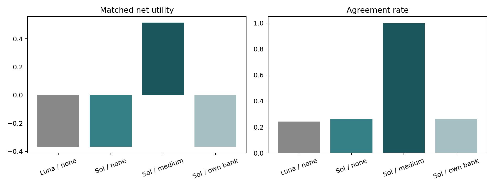
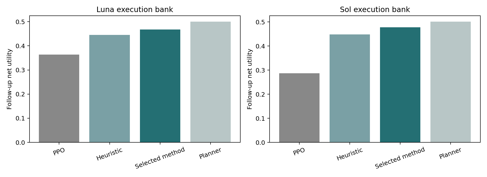

The existing GPT-5.6 Luna conditions were repeated with GPT-5.6 Sol. PPO is an established algorithm; the PPO selector and distilled system are implementations for this environment. Direct model comparisons distinguish model behavior from weaknesses of a particular learned controller.
The comparison uses 64 conditions, the same prompt, and style 0. The first three rows share the Luna execution bank. Sol none uses the same reasoning setting as Luna. Sol medium enables reasoning and raises the combined reasoning/output cap to 4,096 tokens, so its compute budget differs. Only the final row uses the Sol execution bank. One response per model and public state is cached; variation across model samples was not measured.

| policy | net_utility | agreement | queries | signals | repeated_rejected_offer |
|---|---|---|---|---|---|
| Luna_none_Luna_bank | -0.36775 | 0.24273 | 0.21641 | 0.05156 | 0.60672 |
| Sol_none_luna | -0.36728 | 0.26273 | 0.68750 | 0.34453 | 0.52406 |
| Sol_medium_luna | 0.51401 | 1.00000 | 0.42188 | 0.71680 | 0.00000 |
| Sol_none_sol | -0.36728 | 0.26273 | 0.68750 | 0.34453 | 0.52406 |
| bank | policy | net_utility | agreement | queries | signals | cost | length | cases | raw_paths | repeated_rejected_offer |
|---|---|---|---|---|---|---|---|---|---|---|
| Luna | Heuristic_None | 0.46972 | 1.00000 | 0.0000 | 1.00000 | 0.09603 | 3.05625 | NaN | NaN | NaN |
| Luna | Planner_None | 0.53343 | 1.00000 | 0.4375 | 0.72344 | 0.09999 | 3.32750 | NaN | NaN | NaN |
| Luna | PPO_base_17 | 0.36459 | 0.85625 | 0.0000 | 0.00000 | 0.04653 | 2.43125 | NaN | NaN | NaN |
| Luna | PPO_base_29 | 0.38500 | 0.80000 | 0.0000 | 0.00000 | 0.04525 | 2.00000 | NaN | NaN | NaN |
| Luna | PPO_base_43 | 0.38500 | 0.80000 | 0.0000 | 0.00000 | 0.04525 | 2.00000 | NaN | NaN | NaN |
| Luna | Selected_distilled_ppo_17 | 0.49408 | 1.00000 | 0.0000 | 0.81250 | 0.11273 | 3.04688 | 64.0 | 200.0 | 0.0 |
| Luna | Selected_distilled_ppo_29 | 0.46447 | 0.95000 | 0.0000 | 0.63750 | 0.11297 | 2.90625 | 64.0 | 200.0 | 0.0 |
| Luna | Selected_distilled_ppo_43 | 0.46741 | 1.00000 | 0.0000 | 0.67500 | 0.12647 | 3.04375 | 64.0 | 200.0 | 0.0 |
| Sol | Heuristic_None | 0.46972 | 1.00000 | 0.0000 | 1.00000 | 0.09603 | 3.05625 | NaN | NaN | NaN |
| Sol | Planner_None | 0.53343 | 1.00000 | 0.4375 | 0.72344 | 0.09999 | 3.32750 | NaN | NaN | NaN |
| Sol | PPO_base_17 | 0.39850 | 0.85625 | 0.0000 | 0.00000 | 0.07169 | 2.21250 | NaN | NaN | NaN |
| Sol | PPO_base_29 | 0.37106 | 0.85625 | 0.0000 | 0.00000 | 0.04006 | 2.00000 | NaN | NaN | NaN |
| Sol | PPO_base_43 | 0.11000 | 0.00000 | 0.0000 | 0.00000 | 0.01000 | 1.00000 | NaN | NaN | NaN |
| Sol | Selected_distilled_ppo_17 | 0.47745 | 1.00000 | 0.0000 | 0.67500 | 0.13048 | 3.15938 | 64.0 | 200.0 | 0.0 |
| Sol | Selected_distilled_ppo_29 | 0.48412 | 1.00000 | 0.0000 | 0.87500 | 0.14912 | 3.35000 | 64.0 | 200.0 | 0.0 |
| Sol | Selected_distilled_ppo_43 | 0.48928 | 1.00000 | 0.0000 | 0.68750 | 0.11247 | 3.00625 | 64.0 | 200.0 | 0.0 |
With reasoning set to none, the Sol-minus-Luna net utility difference is +0.00047. Enabling medium reasoning and increasing the output/reasoning budget improves Sol by +0.88129 over none. On the same Luna bank and 64 conditions, Sol medium exceeds the three-seed mean of the selected Luna controller by +0.03869 and the strong heuristic by +0.04429. Changes in model family and reasoning compute must therefore be distinguished.
The PPO results characterize the implemented learned controller. Strong direct Sol performance does not support generalizing the earlier failure to all capable LLMs. Distillation improves the learned policy, but this alone does not establish superiority over the stronger reasoning model.
The improved controller retrained with the Sol bank averages 0.48362 on the same 64 conditions; Sol medium direct selection exceeds it by +0.03039. Across the evaluated contexts and style-0 actions, the banks have 0 interpretation differences.
| model | bank_n | bank_match | probes_n | probes_match |
|---|---|---|---|---|
| Luna | 396 | 379 | 180 | 180 |
| Sol | 396 | 396 | 180 | 180 |
These are consistency rates when the same model generates and interprets language. They are not accuracy against human labels. All mismatches remain in the transitions.
| net_utility | agreement | queries | signals | cost | length | ||
|---|---|---|---|---|---|---|---|
| model | policy | ||||||
| Luna | Bandit | 0.11827 | 0.23793 | 0.04462 | 0.00174 | 0.02168 | 1.77274 |
| Heuristic | 0.41900 | 0.94766 | 0.00000 | 1.00000 | 0.11245 | 3.14792 | |
| PPO_base | 0.35808 | 0.72951 | 0.00000 | 0.00000 | 0.05458 | 2.45877 | |
| PPO_belief_mask | 0.37582 | 0.76849 | 0.00000 | 0.00000 | 0.05989 | 2.79219 | |
| PPO_entropy0 | 0.36629 | 0.73984 | 0.00000 | 0.00000 | 0.05602 | 2.78047 | |
| PPO_entropy01 | 0.39212 | 0.76953 | 0.07812 | 0.00000 | 0.05831 | 2.36678 | |
| PPO_eval_belief_mask | 0.35501 | 0.72951 | 0.00000 | 0.00000 | 0.05765 | 2.48273 | |
| PPO_gamma08 | 0.34560 | 0.76641 | 0.00000 | 0.00000 | 0.05068 | 2.25703 | |
| PPO_gamma099 | 0.32671 | 0.75990 | 0.00000 | 0.00000 | 0.05166 | 2.72031 | |
| PPO_no_rejection_penalty | 0.37701 | 0.77812 | 0.00000 | 0.00000 | 0.07956 | 2.90625 | |
| PPO_no_reversal_penalty | 0.37073 | 0.71927 | 0.00000 | 0.00000 | 0.05434 | 2.27995 | |
| PPO_query_disabled | 0.34672 | 0.76667 | 0.00000 | 0.00000 | 0.04750 | 2.24948 | |
| Planner | 0.48819 | 0.93307 | 0.25000 | 0.52018 | 0.08222 | 3.02993 | |
| Planner_no_query | 0.47703 | 0.92760 | 0.00000 | 0.50104 | 0.08046 | 2.85990 | |
| Random | -0.14573 | 0.11014 | 0.38645 | 0.39055 | 0.29235 | 4.28792 | |
| Sol | Bandit | 0.11000 | 0.00000 | 0.00000 | 0.00000 | 0.01000 | 1.00000 |
| Heuristic | 0.42528 | 0.94766 | 0.00000 | 1.00000 | 0.10617 | 3.10781 | |
| PPO_base | 0.28049 | 0.51875 | 0.00000 | 0.00000 | 0.03987 | 1.71736 | |
| PPO_belief_mask | 0.11000 | 0.00000 | 0.00000 | 0.00000 | 0.01000 | 1.00000 | |
| PPO_entropy0 | 0.33884 | 0.77812 | 0.00000 | 0.00000 | 0.04572 | 2.00000 | |
| PPO_entropy01 | 0.41701 | 0.85495 | 0.00000 | 0.09974 | 0.06816 | 2.29896 | |
| PPO_eval_belief_mask | 0.26950 | 0.49384 | 0.00000 | 0.00000 | 0.04239 | 1.71858 | |
| PPO_gamma08 | 0.11000 | 0.00000 | 0.00000 | 0.00000 | 0.01000 | 1.00000 | |
| PPO_gamma099 | 0.39543 | 0.77812 | 0.00000 | 0.00000 | 0.06826 | 2.17109 | |
| PPO_no_rejection_penalty | 0.37009 | 0.77812 | 0.00000 | 0.00000 | 0.09965 | 2.33255 | |
| PPO_no_reversal_penalty | 0.11000 | 0.00000 | 0.00000 | 0.00000 | 0.01000 | 1.00000 | |
| PPO_query_disabled | 0.37571 | 0.71901 | 0.00000 | 0.00000 | 0.05035 | 2.00000 | |
| Planner | 0.48898 | 0.93203 | 0.25000 | 0.51914 | 0.08141 | 2.96613 | |
| Planner_no_query | 0.47806 | 0.92656 | 0.00000 | 0.50000 | 0.07941 | 2.78438 | |
| Random | -0.11459 | 0.10150 | 0.36305 | 0.36789 | 0.25897 | 4.03051 |

| net_utility | agreement | queries | signals | cost | length | ||
|---|---|---|---|---|---|---|---|
| model | policy | ||||||
| Luna | Heuristic | 0.44538 | 0.97344 | 0.00000 | 1.00000 | 0.10584 | 3.13490 |
| Planner | 0.50019 | 0.92052 | 0.27083 | 0.60099 | 0.08730 | 3.14190 | |
| Planner_no_query | 0.49223 | 0.91875 | 0.00000 | 0.59609 | 0.08475 | 2.92839 | |
| base | 0.36414 | 0.74991 | 0.00000 | 0.00000 | 0.05376 | 2.41302 | |
| distilled | 0.44593 | 0.82472 | 0.29543 | 0.50339 | 0.09170 | 4.03832 | |
| distilled_ppo | 0.46807 | 0.87071 | 0.03125 | 0.59085 | 0.10275 | 2.97684 | |
| distilled_ppo_masked_belief | 0.42669 | 0.84818 | 0.03125 | 0.61033 | 0.13253 | 3.08646 | |
| distilled_ppo_no_query | 0.46704 | 0.87057 | 0.00000 | 0.59922 | 0.10352 | 2.97075 | |
| distilled_ppo_no_signal | 0.37429 | 0.79899 | 0.08983 | 0.00000 | 0.08491 | 2.64828 | |
| Sol | Heuristic | 0.44830 | 0.97344 | 0.00000 | 1.00000 | 0.10291 | 3.11719 |
| Planner | 0.50125 | 0.91844 | 0.26562 | 0.59891 | 0.08637 | 3.06883 | |
| Planner_no_query | 0.49339 | 0.91562 | 0.00000 | 0.59297 | 0.08354 | 2.85234 | |
| base | 0.28743 | 0.53750 | 0.00000 | 0.00000 | 0.03863 | 1.71962 | |
| distilled | 0.45903 | 0.85565 | 0.27021 | 0.55196 | 0.10462 | 3.69200 | |
| distilled_ppo | 0.47833 | 0.86600 | 0.07465 | 0.58257 | 0.09372 | 2.82292 | |
| distilled_ppo_masked_belief | 0.42200 | 0.82726 | 0.07743 | 0.58628 | 0.12791 | 2.99965 | |
| distilled_ppo_no_query | 0.47467 | 0.87109 | 0.00000 | 0.59826 | 0.09866 | 2.80686 | |
| distilled_ppo_no_signal | 0.38263 | 0.79567 | 0.21219 | 0.00000 | 0.07819 | 2.51774 |
Replications use the same training budget, three seeds, development selection, and follow-up numerical conditions. Changing the language model can change bank interpretations and transitions, so full-system outcomes must be distinguished from direct action-selection effects. Teacher computation using known rules is an additional resource; this is not an equal-resource model-free learning comparison.
| role | calls | cost | prompt_tokens | completion_tokens | reasoning_tokens |
|---|---|---|---|---|---|
| direct_medium | 349.0 | 2.004614 | 231827.0 | 154096.0 | 148861.0 |
| language | 972.0 | 0.814698 | 239249.0 | 33620.0 | 0.0 |
| direct_none | 476.0 | 0.693730 | 315925.0 | 6188.0 | 0.0 |
Charges are actual billed amounts for cached public-state responses. They do not represent total online deployment costs or all teacher/training computation.
{
"learned_policy_raw_paths": 153360,
"learned_policy_raw_turns": 417227,
"direct_raw_paths": 600,
"checks_passed": true,
"sol_calls": 1797,
"sol_cost": 3.513042,
"all_authorized_cost": 3.6586678,
"unresolved_calls": 0,
"account_usage_increment": 3.6586678,
"response_cost_minus_account_increment": 0.0,
"account_counter_matches_response_sum": true,
"budget_accounting": "Use full response cost sum conservatively; retain any account-counter difference without assuming its cause."
}This synthetic environment is grounded in real diplomatic documents. Its two test event groups and source texts were already used, so model replication is not new historical validation. The official Sol model documentation and OpenRouter endpoint metadata were checked before execution. Actual charges are retained in raw responses and the private shared ledger.